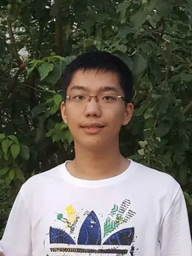

|
Hong Liu
|
 |
Undergraduate,
Department of Electronic Engineering,
Tsinghua University
E-mail: h-l17 [@] mails [DOT] tsinghua [DOT] edu [DOT] cn
Google Scholar
|
About me
I am an undergraduate student majoring in Electronic Engineering at Tsinghua University. I'm fortunate to work with Prof. Mingsheng Long and Prof. Tengyu Ma. Please click here to view my cv.
My current interests include transfer learning and deep learning. I'm working on algorithms and theories for more efficient knowledge transfer. I have also been working on domain adaptation algorithms and their applications.
Knowledge transfer is an interesting and charming topic. If you are also interested in it, feel free to contact with me.
Publications
Conferennce Proceedings
Learning to Adapt to Evolving Domains
Hong Liu, Mingsheng Long, Jianmin Wang, Yu Wang
NeurIPS 2020
Transferable Adversarial Training: A General Approach to Adapting Deep Classifiers
Hong Liu, Mingsheng Long, Jianmin Wang, Michael I. Jordan
ICML 2019, (Long Talk)
Separate to Adapt: Open Set Domain Adaptation via Progressive Separation
Hong Liu, Zhangjie Cao, Mingsheng Long, Jianmin Wang, Qiang Yang
CVPR 2019
Preprints
Towards Understanding the Transferability of Deep Feature Representations
Hong Liu, Mingsheng Long, Jianmin Wang, Michael I. Jordan
arxiv preprint
Meta-learning Transferable Representations with a Single Target Domain
Hong Liu, Jeff Z. HaoChen, Colin Wei, Tengyu Ma
arxiv preprint
Selected Awards and Honors
National Scholarship, awarded for academic excellence, Ministry of Education
Nanxiang Jiang Scholarship, the best award for juniors in Tsinghua
3rd prize, ECCV Visual Domain Adaptation Challenge (2018)
1st prize, China Undergraduate Physics Competition (2018)
2nd prize, China Math Olympiad (2016)
Professional Services
Reviewing
|